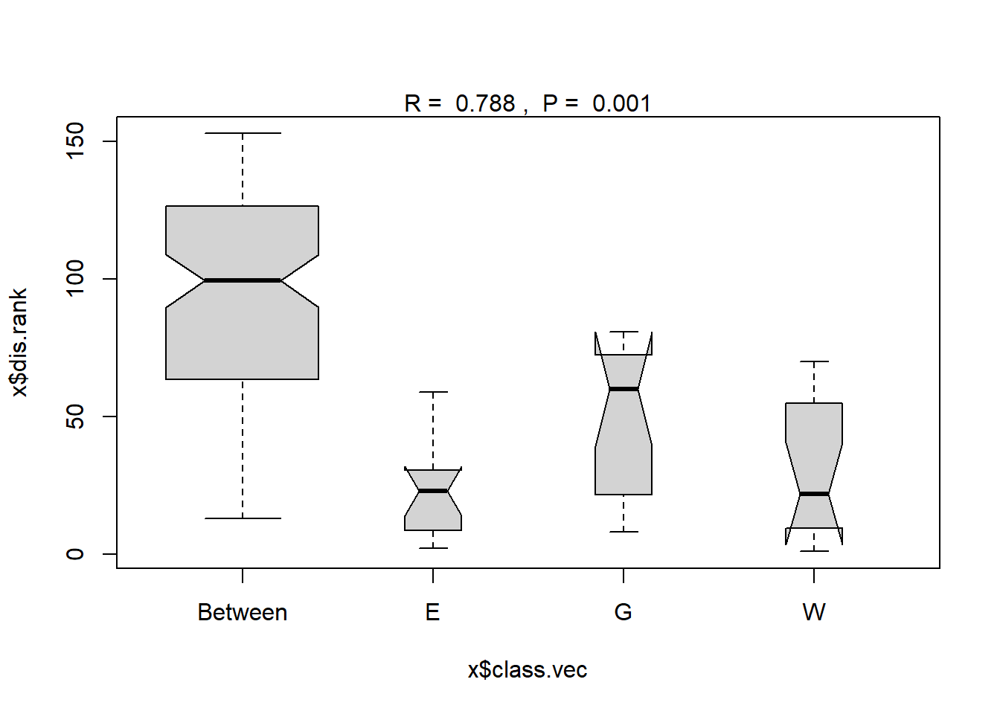
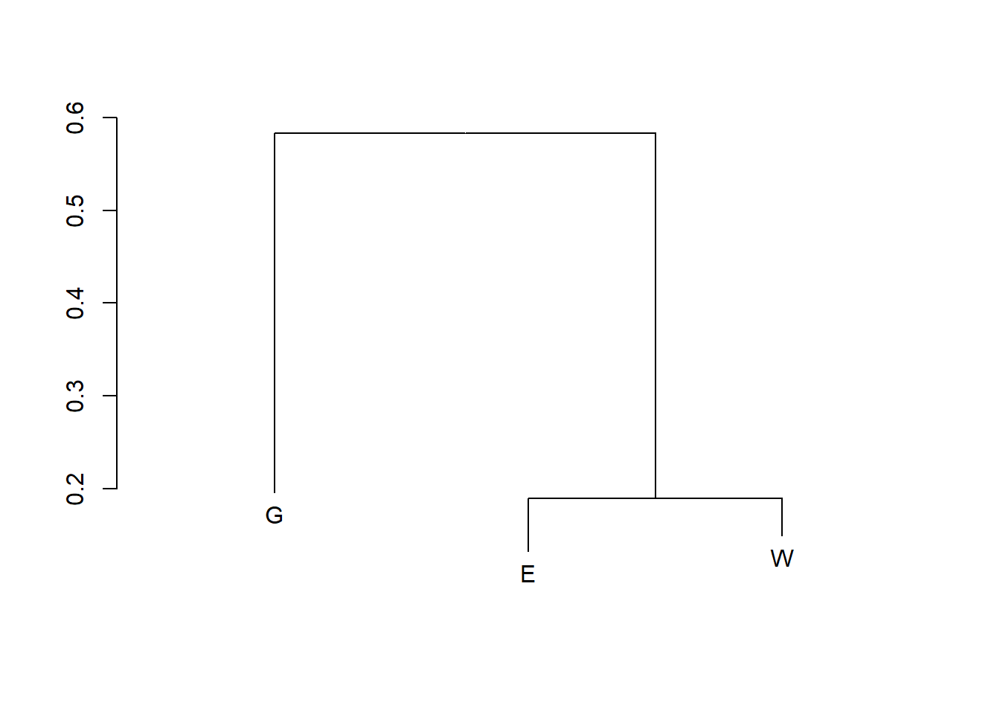

bettles <- read.table( "data/bettles.txt")Clase 9: Analisis Multivariado Parte 2
Introduccion
Para esta clase utilizaremos la base de datos bettles.txt. Estos datos muestran las abundancias de escarabajos en tres tipos de hábitat en el Reino Unido. Hay 6 réplicas para cada hábitat (Wood, Grass, Edge).
ANOSIM (Analysis of Similarities) es un método de análisis multivariante que se utiliza para evaluar la similitud o diferencias entre grupos de muestras en una o más variables categóricas o continúas. Se basa en el análisis de la varianza univariante (ANOVA), pero es más adecuado para datos multivariantes en los que hay más de una variable dependiente.
El método de ANOSIM permite comparar grupos de muestras en términos de la similitud o diferencias de sus patrones de variación en un conjunto de variables. Se puede utilizar para evaluar si hay diferencias significativas entre grupos de muestras en un conjunto de variables y si hay una asociación entre estas variables y la variable categórica independiente.
library(vegan)Loading required package: permuteLoading required package: latticeThis is vegan 2.6-4library(indicspecies)Warning: package 'indicspecies' was built under R version 4.3.3Ejemplo para correr anosim en R
bettles_anosim <- anosim(bettles[,1:48], bettles$Habitat, permutations = 999, distance = "bray")
bettles_anosim
Call:
anosim(x = bettles[, 1:48], grouping = bettles$Habitat, permutations = 999, distance = "bray")
Dissimilarity: bray
ANOSIM statistic R: 0.7885
Significance: 0.001
Permutation: free
Number of permutations: 999plot(bettles_anosim)Warning in (function (z, notch = FALSE, width = NULL, varwidth = FALSE, : some
notches went outside hinges ('box'): maybe set notch=FALSE
Los resultados del análisis incluyen el valor de R (un valor entre -1 y 1 que indica la fuerza de la relación entre los grupos) y el valor de p. Si el valor de p es menor que un alpha (por ejemplo, 0.05), entonces podemos decir que hay diferencias significativas entre los grupos.
El método de Multi Response Permutation Procedure (MRPP) es una herramienta de análisis multivariante que se utiliza para evaluar la similitud o diferencias entre grupos de muestras en una o más variables categóricas o continúas. Se basa en el análisis de la varianza univariante (ANOVA), pero es más adecuado para datos multivariantes en los que hay más de una variable dependiente.
El método de MRPP permite comparar grupos de muestras en términos de la similitud o diferencias de sus patrones de variación en un conjunto de variables. Se puede utilizar para evaluar si hay diferencias significativas entre grupos de muestras en un conjunto de variables y si hay una asociación entre estas variables y la variable categórica independiente.
Ejemplo de mrpp en R
bettles_mrpp <- mrpp(bettles[,1:48], bettles$Habitat, permutations = 999, distance = "bray")
bettles_mrpp
Call:
mrpp(dat = bettles[, 1:48], grouping = bettles$Habitat, permutations = 999, distance = "bray")
Dissimilarity index: bray
Weights for groups: n
Class means and counts:
E G W
delta 0.1325 0.196 0.1493
n 6 6 6
Chance corrected within-group agreement A: 0.5645
Based on observed delta 0.1593 and expected delta 0.3657
Significance of delta: 0.001
Permutation: free
Number of permutations: 999el valor “A” se utiliza para medir la disimilitud intrasistemas, mientras que el valor “delta” se utiliza para medir la disimilitud intersistemas.
La disimilitud intrasistemas se refiere a la disimilitud o similitud promedio entre todas las sitios de observaciones dentro de cada grupo. Por ejemplo, en el habitat de borde E, si queremos saber si hay diferencias significativas entre los sitios de muestreo de E, podríamos medir la disimilitud intrasistemas comparando la similitud promedio entre todas los sitios de muestreo, que en este caso es 0.1325.
La disimilitud intersistemas, por otro lado, se refiere a la disimilitud o similitud promedio entre todas los sitios de observaciones entre los habitats. Qu en este caso es 0.3657. Como solo tenemos un valor para la disimilitud intersistema, necesitaremos una prueba de contraste.
Prueba de contraste basada en mrpp en R
contraste_mrpp <- meandist(vegdist(bettles[,1:48], method = "bray"), bettles$Habitat)
contraste_mrpp E G W
E 0.1324967 0.5466690 0.1896723
G 0.5466690 0.1960117 0.6189668
W 0.1896723 0.6189668 0.1493005
attr(,"class")
[1] "meandist" "matrix"
attr(,"n")
grouping
E G W
6 6 6 plot(contraste_mrpp)
SIMPER (Similarity Percentages) es un método de análisis multivariante que se utiliza para evaluar la similitud o diferencias entre grupos de muestras en una o más variables categóricas o continúas. Se basa en el análisis de la varianza univariante (ANOVA), pero es más adecuado para datos multivariantes en los que hay más de una variable dependiente.
El método de SIMPER permite comparar grupos de muestras en términos de la similitud o diferencias de sus patrones de variación en un conjunto de variables. Se puede utilizar para evaluar si hay diferencias significativas entre grupos de muestras en un conjunto de variables y si hay una asociación entre estas variables y la variable categórica independiente.
Ejemplo de simper en R
bettles_simper <- simper(bettles[,1:48], bettles$Habitat, permutations = 999)
bettles_simpercumulative contributions of most influential species:
$E_G
Aba.par Pte.mad Neb.bre
0.3936088 0.6615509 0.7837093
$E_W
Aba.par Neb.bre Pte.mad Cal.rot Lei.ruf
0.1821992 0.3623249 0.5388857 0.6651826 0.7526674
$G_W
Aba.par Pte.mad Neb.bre
0.2939272 0.5233630 0.7024573 La contribución se refiere al porcentaje de contribución de la variable al desimilaridad global entre los grupos. Por ejemplo, si la contribución de una variable es del 50%, significa que esa variable es responsable de la mitad de la desimilaridad entre los grupos.
El SE.Contribución (error estándar de la contribución) es una medida de la precisión de la contribución de la variable. Es decir, mide cuán cerca está la contribución real de la variable de la contribución estimada. A mayor SE.Contribución, mayor incertidumbre en cuanto a la contribución real de la variable.
Es importante tener en cuenta que el SIMPER es una herramienta de análisis de datos que se utiliza para identificar qué variables están contribuyendo de manera significativa a la desimilaridad entre dos o más grupos. Es útil para entender qué variables son las más importantes en la diferenciación entre los grupos y para identificar posibles patrones o tendencias en los datos.
Determinar la ocurrencia o abundancia de un pequeño conjunto de especies indicadoras, como alternativa a muestrear toda la comunidad, ha resultado particularmente útil en la monitorización ambiental a largo plazo para la conservación o el manejo ecológico. Las especies se eligen como indicadores si:
reflejan el estado biótico o abiótico del entorno; proporcionan evidencia de los impactos del cambio ambiental; o predicen la diversidad de otras especies, táxones o comunidades dentro de un área.
Ejemplo en R
bettles_indicadores <- multipatt(bettles[,1:48], bettles$Habitat, control = how(nperm = 999))
summary(bettles_indicadores)
Multilevel pattern analysis
---------------------------
Association function: IndVal.g
Significance level (alpha): 0.05
Total number of species: 48
Selected number of species: 23
Number of species associated to 1 group: 16
Number of species associated to 2 groups: 7
List of species associated to each combination:
Group E #sps. 3
stat p.value
Pte.mel 0.943 0.004 **
Lei.ful 0.913 0.005 **
Pte.obl 0.816 0.017 *
Group G #sps. 10
stat p.value
Ago.afr 1.000 0.001 ***
Cal.fus 1.000 0.001 ***
Cli.fos 1.000 0.001 ***
Bem.big 0.983 0.001 ***
Ama.ple 0.816 0.008 **
Bra.sha 0.816 0.011 *
Not.ruf 0.816 0.021 *
Pte.ver 0.816 0.014 *
Syn.niv 0.816 0.014 *
Tre.qua 0.816 0.016 *
Group W #sps. 3
stat p.value
Cyc.car 1.000 0.001 ***
Lei.ruf 0.965 0.001 ***
Not.big 0.909 0.004 **
Group E+G #sps. 6
stat p.value
Bem.man 1.000 0.001 ***
Poe.cup 1.000 0.001 ***
Pte.nigr 1.000 0.001 ***
Pte.str 0.986 0.001 ***
Sto.pum 0.957 0.002 **
Bem.lam 0.913 0.005 **
Group E+W #sps. 1
stat p.value
Car.vio 1 0.001 ***
---
Signif. codes: 0 '***' 0.001 '**' 0.01 '*' 0.05 '.' 0.1 ' ' 1 El estadístico “stat” se refiere a cualquier estadístico o medida de rendimiento incluida en los resultados del análisis de patrones múltiples (puede estar en un rango de 0 a 1). Estos estadísticos y medidas de rendimiento pueden ser útiles para interpretar los resultados del análisis y evaluar la precisión de la predicción de la variable de respuesta a partir de las variables predictivas.